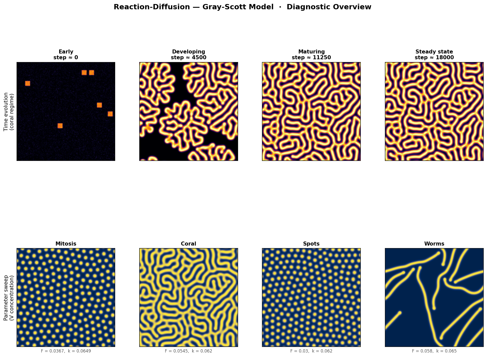
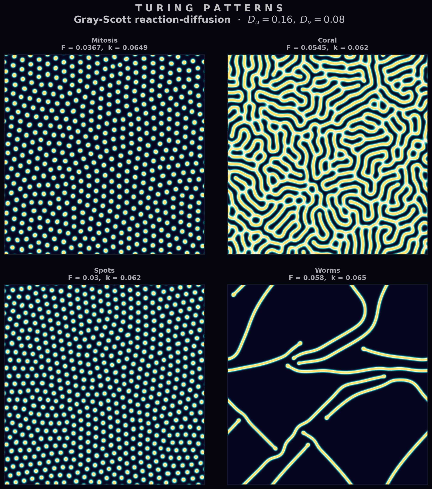

Reaction-Diffusion
Reaction-diffusion systems couple local chemical reactions with spatial diffusion to produce remarkably complex patterns from simple rules. They are among the most visually striking examples of self-organisation in mathematics and nature.
7.1 Turing Patterns
In a landmark 1952 paper, Alan Turing showed that a spatially uniform steady state can become unstable when two interacting chemicals diffuse at different rates. The faster-diffusing species (the inhibitor) suppresses the slower one (the activator) at long range, while the activator reinforces itself locally. This interplay — local activation, long-range inhibition — drives spontaneous symmetry breaking, producing stable spatial patterns from near-homogeneous initial conditions.
The resulting structures — spots, stripes, and labyrinths — appear throughout biology: the pigmentation of zebra fish and sea shells, the spacing of hair follicles, and the patterning of leopard rosettes. They also arise in purely chemical systems such as the Belousov-Zhabotinsky reaction.
7.2 The Gray-Scott Model
The Gray-Scott model tracks two chemical species: a substrate $U$ that is continuously fed into the system and an activator $V$ that catalyses its own production by consuming $U$. The PDEs are:
Here $F$ is the feed rate (replenishing $U$ and diluting $V$) and $k$ is the kill rate (removing $V$). The autocatalytic term $UV^2$ couples the two species: $V$ grows by consuming $U$, and two molecules of $V$ are required to convert one molecule of $U$.
The key requirement for pattern formation is $D_u > D_v$ — the substrate must diffuse faster than the activator. Typical values are $D_u = 0.16$ and $D_v = 0.08$ (a 2:1 ratio). The pair $(F, k)$ then selects which type of pattern emerges.
7.3 Numerical Method
The Laplacian $\nabla^2$ is discretised on a uniform 2D grid using the standard 5-point stencil:
Periodic boundary conditions wrap the grid into a torus, eliminating edge effects. Time integration uses forward Euler: at each step the reaction and diffusion terms are evaluated explicitly and added to the current concentrations. This is simple to implement but imposes a stability constraint $\Delta t \lesssim h^2 / (4\,D_u)$ — the CFL-like condition for diffusion on a 2D grid.
In practice the simulation runs on a grid of $256 \times 256$ or larger, with $h = 1$ and $\Delta t = 1$, for $O(10^4)$ time steps until patterns stabilise.

7.4 Pattern Regimes
The $(F, k)$ parameter space contains a rich zoo of qualitatively different patterns. Four classic regimes:
| Regime | $(F, k)$ | Description |
|---|---|---|
| Mitosis (self-replicating spots) | $(0.0367,\; 0.0649)$ | Spots that grow, elongate, and divide — resembling cell division. |
| Coral / labyrinthine | $(0.0545,\; 0.062)$ | Branching, maze-like structures reminiscent of brain coral. |
| Soliton spots | $(0.03,\; 0.062)$ | Isolated, stable spots that neither grow nor shrink. |
| Worms / stripes | $(0.058,\; 0.065)$ | Elongated filaments that connect into stripe-like networks. |
Transitions between regimes are often sharp: a small change in $F$ or $k$ can switch the system from spots to stripes or from stable patterns to extinction.
